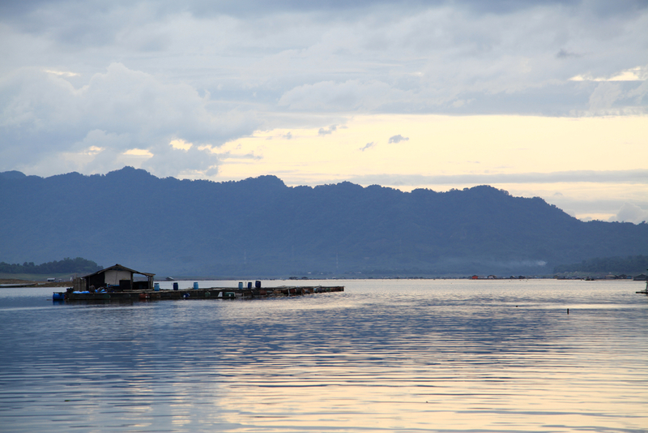

Wisata Waduk Jatiluhur, Danau Buatan yang Nggak Kalah Keren dari Danau Alami
Selain berfungsi sebagai sarana pengairan ternyata waduk bisa jadi tempat yang menarik untuk dikunjungi, lho. Ngomongin soal waduk, kamu udah tau belum apa nama waduk terbesar di Indonesia? Jawabannya adalah Waduk Jatiluhur!
Waduk Jatiluhur merupakan waduk terbesar di Indonesia dan di Asia Tenggara. Saking besarnya waduk ini mampu menampung hingga 12,9 miliar liter kubik air dengan luas area waduk mencapai 1.500 km persegi. Besarnya kapasitas air yang dimiliki Waduk Jatiluhur membuat waduk ini menjadi PLTA dengan sistem limpasan terbesar di dunia, lho.
Untuk lokasinya sendiri Waduk Jatiluhur terletak di Purwakarta, Jawa Barat. Waduk ini punya pemandangan yang sangat indah sehingga banyak yang menyamakan pemandangan dari sini seperti pemandangan alam Skotlandia.
Waduk Ir. H. Juanda adalah nama lain dari Waduk Jatiluhur. Nama ini berikan untuk mengenang Juanda, Perdana Menteri Indonesia di awal kemerdekaan yang memperjuangkan terbentuknya Waduk Jailuhur dengan cara membendung Sungai Citarum.
Waduk Jatiluhur Purwakarta mulai dibuat tahun 1957 dengan peletakan batu pertama yang dilakukan oleh Presiden Soekarno. Pembuatan danau ini dikerjakan oleh kontraktor asal Prancis dan memakan waktu hingga 10 tahun. Kemudian pada tahun 1967 Presiden Suharto meresmikan waduk ini.
Selain memiliki sejarah yang cukup panjang Waduk Jatiluhur ternyata juga memiliki pesona yang menarik perhatian para wisatawan, lho. Wisata Waduk Jatiluhur menjadi salah satu daya tarik wisata di Kota Purwakarta. Area waduk dikelilingi banyak tempat wisata hingga penginapan.
Selain itu dari pinggir waduk kamu juga bisa menikmati panorama Gunung Tiga Menara dan Gunung Parang. Hal yang jadi favorit traveler saat wisata ke Waduk Jatiluhur yaitu melihat matahari terbenam ke tepian air waduk. Pemandangan ini nggak kalah keren dibandingkan melihat matahari terbenam di pantai!
Untuk menikmati keindahan Waduk Jatiluhur kamu dikenakan biaya tiket masuk sebesar Rp20 ribu per orang. Dengan tiket masuk yang cukup terjangkau ini kamu bisa melakukan beberapa aktivitas menarik selama di sini seperti memancing, berlayar mengelilingi waduk, hingga piknik dan kemah.